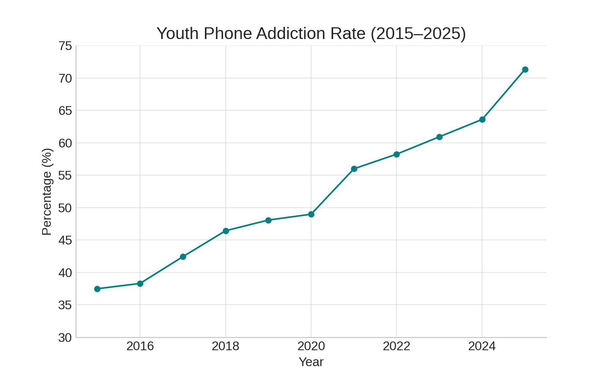
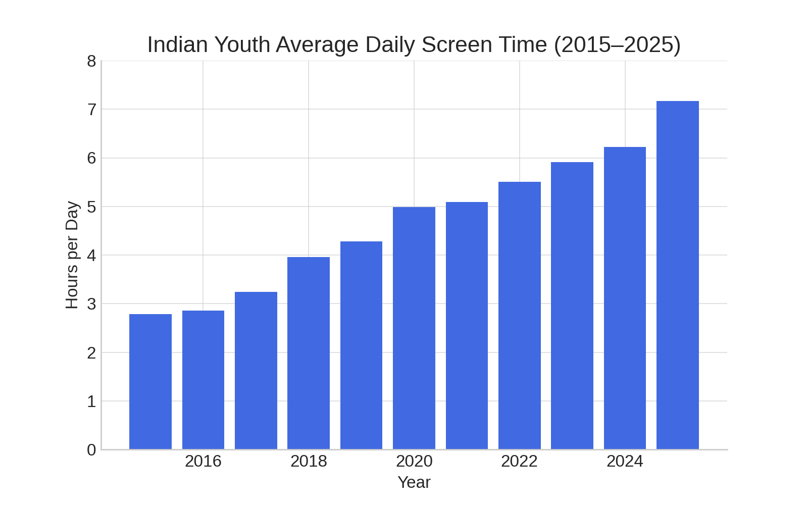
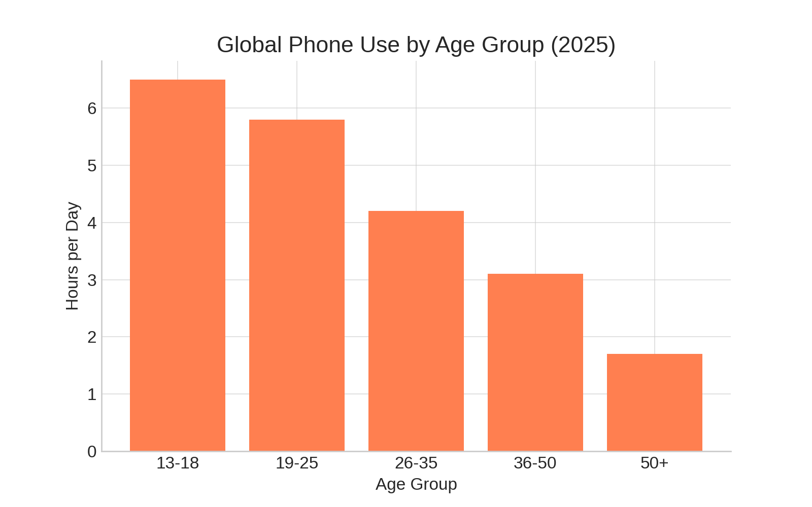
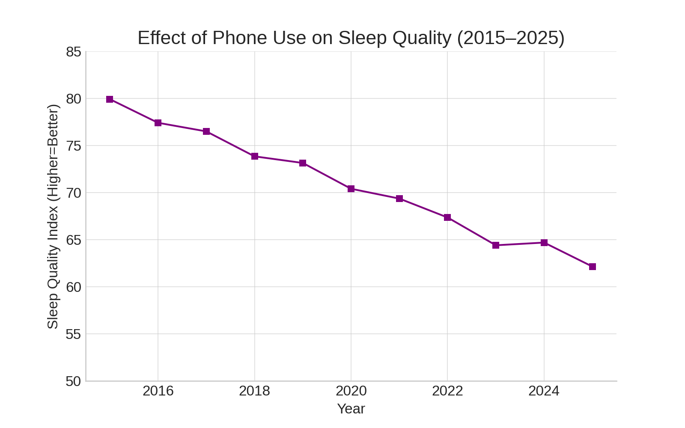
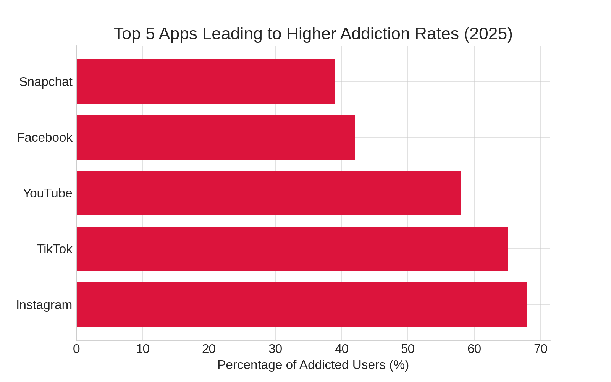
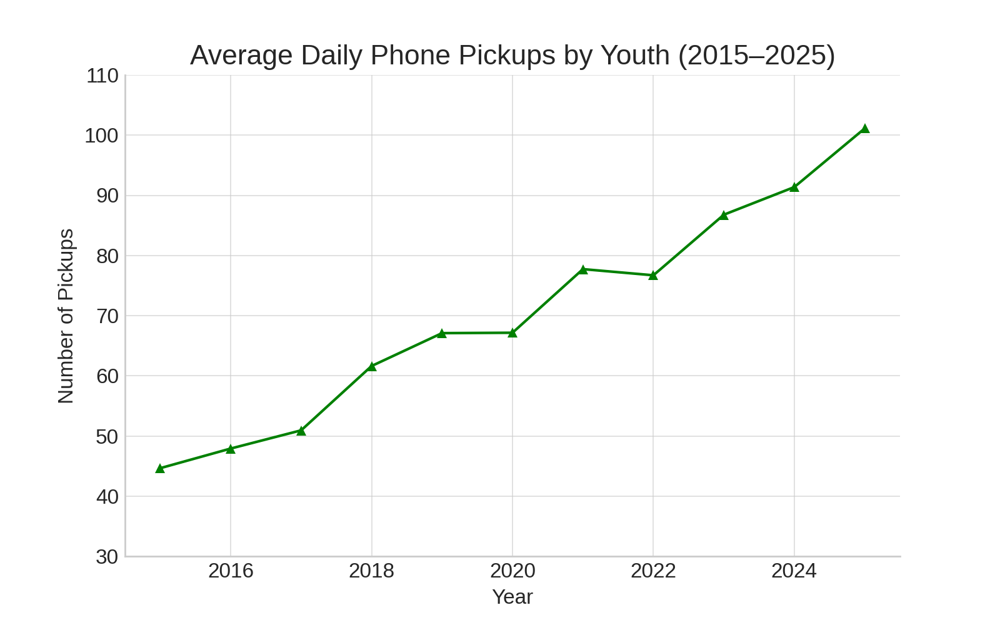
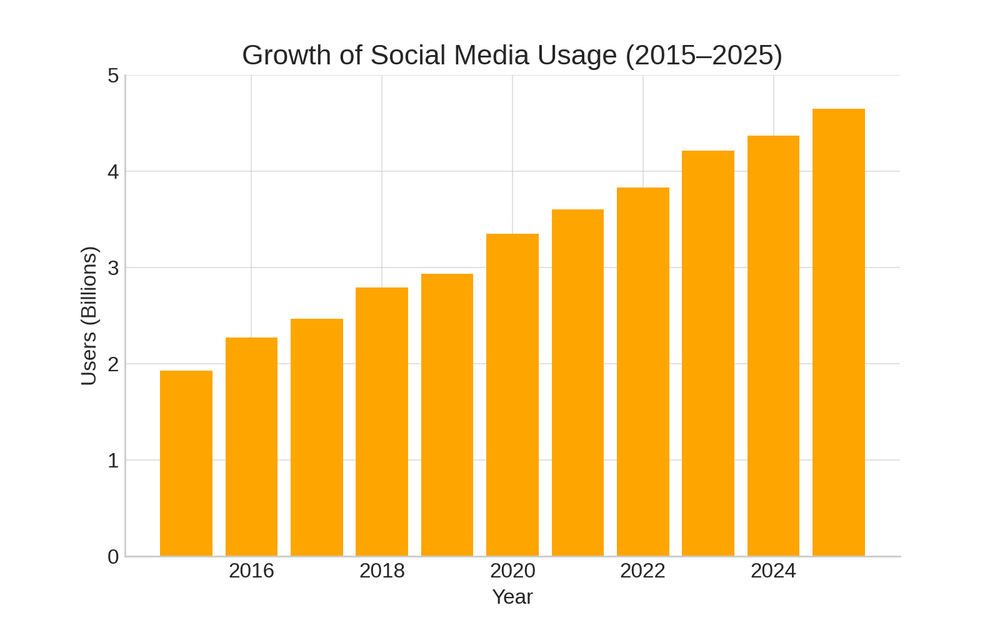
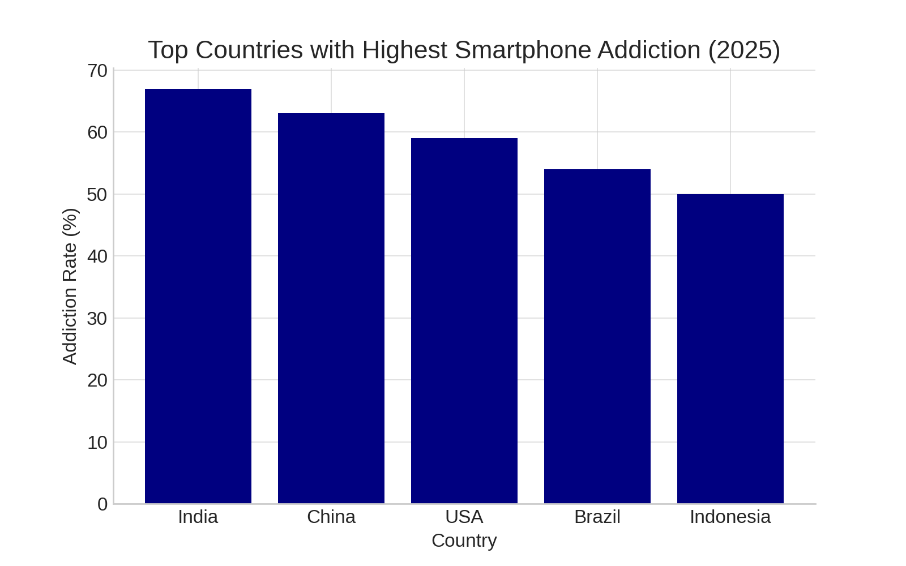
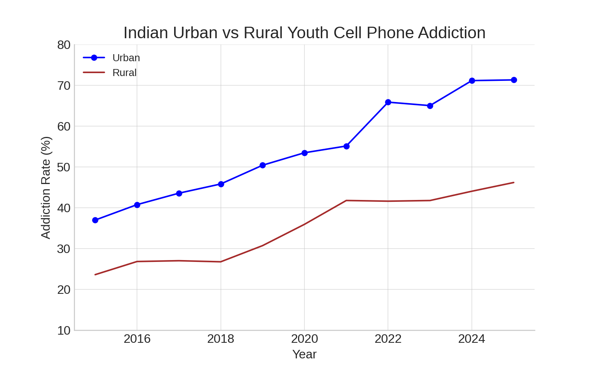
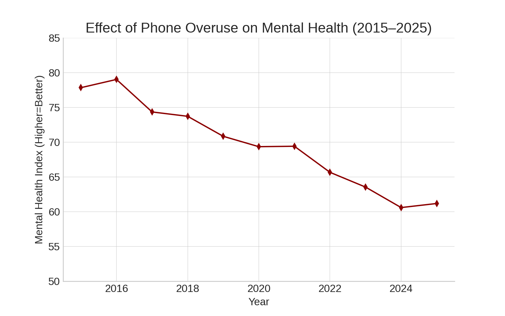

Gallery & News
Explore 2025's latest news and real data about mobile addiction
📢 Latest News & Trends – 2025
📊 Real Data & Charts

Mobile addiction among youth
Detailed info here...

Indian youth average screen time
Detailed info here...

Global phone use by age group
Detailed info here...

Effect of phone use on sleep quality
Detailed info here...

Top 5 apps contributing to addiction
Detailed info here...

Average daily phone pickups
Detailed info here...

Growth of social media users
Detailed info here...

Top countries by phone addiction
Detailed info here...

Urban vs rural phone addiction
Detailed info here...

Impact of phones on mental health
Detailed info here...